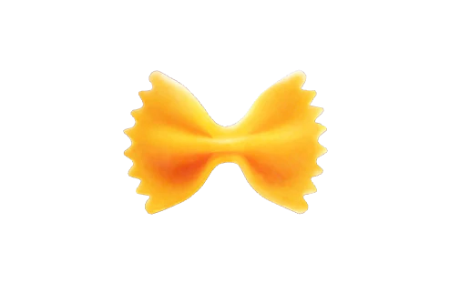
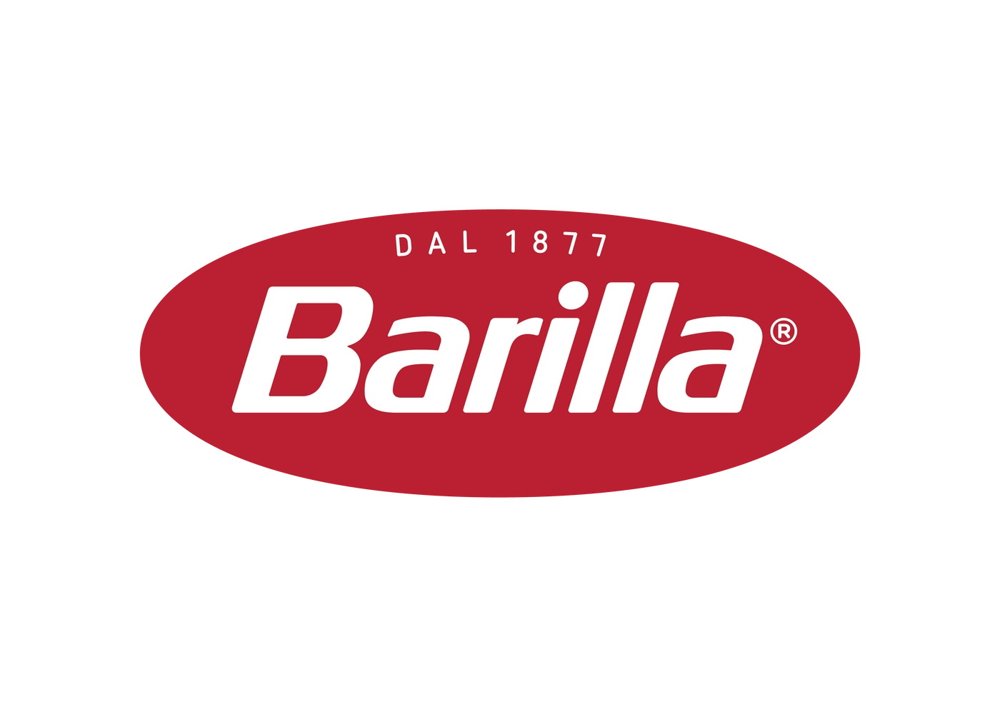

Prodotti
Buoni, sicuri, sempre più sani
- Profilo nutrizionale migliorato (meno sale, zuccheri, grassi; più fibre)
- Sicurezza e qualità alimentare
- Trasparenza verso i consumatori


Ogni scelta conta, ogni giorno.
Il Gruppo Barilla è un’impresa alimentare italiana a controllo familiare, fondata nel 1877 a Parma, oggi tra i principali operatori globali nel settore della pasta, dei prodotti da forno e delle salse. Nel corso della sua storia, Barilla ha costruito la propria crescita su un modello industriale che coniuga tradizione alimentare italiana, innovazione tecnologica e sviluppo internazionale, mantenendo una forte identità valoriale. È all’interno di questo scenario che Barilla colloca il proprio percorso di sostenibilità, inteso come parte integrante del modo di fare impresa e come risposta strategica alle trasformazioni del contesto operativo in cui l’azienda è chiamata a operare.
Un portafoglio di marchi che va ben oltre la pasta: Mulino Bianco, Wasa, Pavesi, Pan di Stelle, Harrys e molti altri.
Il cibo, per Barilla, non è solo un prodotto industriale: è cultura, relazione, responsabilità. Questo approccio guida sia le scelte di business sia il modo di intendere la sostenibilità grazie soprattutto ai valori che fanno di Barilla un leader mondiale.
Il Rapporto di Sostenibilità racconta come Barilla sta affrontando un mondo che cambia rapidamente. Il documento non si limita a descrivere le attività svolte, ma racconta il percorso di sostenibilità intrapreso dall’impresa, con uno sguardo verso il 2030, per trasformare la visione aziendale in azioni quotidiane e impegni concreti.
Dal 2024 Barilla ha rafforzato il proprio modello, rendendo la sostenibilità parte integrante delle decisioni aziendali, non un'attività separata.
Valutare sia l'impatto dell'azienda su società e ambiente, sia i rischi che temi ambientali e sociali generano sul business.
Coinvolge oltre 150 persone in azienda e definisce 3 organi in stretta e reciproca collaborazione tra loro.
Progressione verso gli standard europei di reporting organizzati secondo i pilastri: Ambientale, Sociale e di Governance.
I risultati ottenuti sono integrati nei processi decisionali aziendali, con il coinvolgimento diretto dei team acquisti.
Definizione di KPI specifici per monitorare la qualità del lavoro e ridurre al minimo gli sprechi.
Ambizione all'azzeramento degli infortuni in tutti gli stabilimenti con l’introduzione dei Sistemi di Gestione HSEE certificati in accordo con la norma ISO 45001.
La sostenibilità non è più solo "fare bene", ma fare impresa in modo resiliente e responsabile.
Buoni, sicuri, sempre più sani
Sicurezza, inclusione, benessere
Responsabilità dal campo alla tavola
Meno emissioni, più resilienza
Il documento completo che fotografa i risultati, le sfide e gli impegni futuri.
Scarica PDF